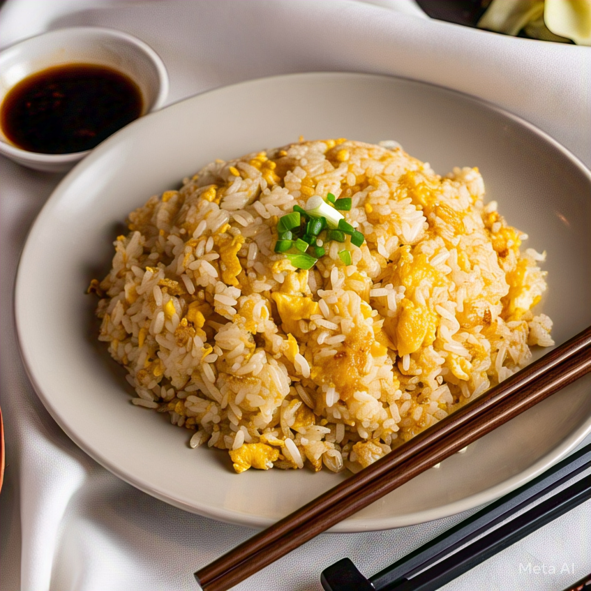

Home
Egg Fried Rice

Description
Egg fried rice is a popular Chinese dish made with cooked rice, scrambled eggs and often served hot. It is a versatile and flavourful meal that is easy to customize with your favourite ingriedients.
Ingriedients
- 2 cups cooked rice (prefreably a day old)
- 2 eggs
- 1 medium onion (finely chopped)
- 2-3 garlic cloves (minced)
- 1/2 cup chopped carrots (optional)
- 1/4 cup green peas (optional)
- 2-3 spring onions (chopped)
- 2 tbsp soy sauce
- 1 tbsp oil (vegetable/sesame oil)
- Salt to taste
- Pepper to taste
Steps
- Cook and cool the rice (leftover rice works best).
- Heat some oil in a pan and scramble the eggs. Take them out and keep aside.
- In the same pan, add a little more oil and sauté chopped garlic and onions.
- Add chopped vegetables like carrots and peas if you like, and stir-fry for a couple of minutes.
- Add the cooked rice and stir well to mix everything.
- Pour in some soy sauce, salt, and pepper. Mix it all together.
- Add the scrambled eggs back into the pan and mix.
- Garnish with chopped spring onions and serve hot.